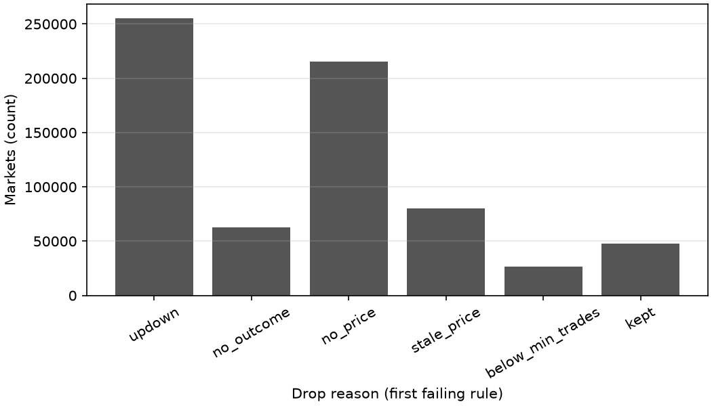
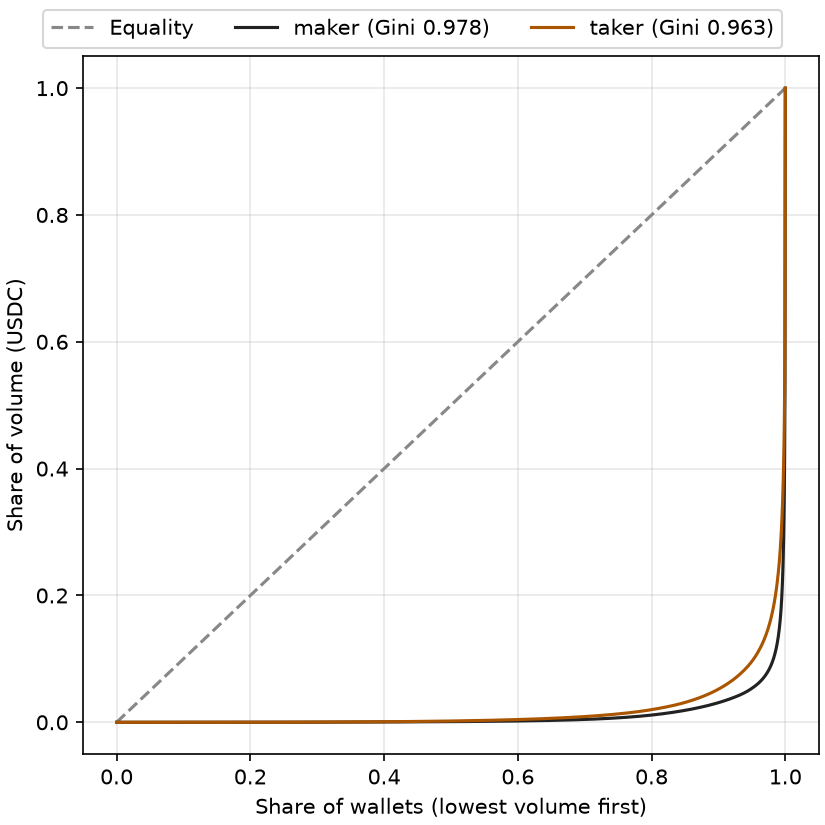

When Polymarket Says 70%, Does It Happen 70% of the Time?
Group 1 · Team Brier
Taek Lim · Zhugang Liu (Tony) · Francisco Cortez
CS 6344 Introduction to Data Science The University of Texas Rio Grande Valley (UTRGV)
Notes: Speaker: Intro (Taek Lim). About 30 seconds. Good morning. We are Group 1, Team Brier. Our question is simple: when Polymarket shows a price of 70%, does that event happen about 70% of the time? We answer it on real trade data, and each of us will present one of our three research questions.
A price is useful only if it can be read as a probability
A YES share pays $1 if the event happens. At a price of $0.70, readers see a 70% chance. Is that chance right?
Q1
Is the crowd right?
Do events priced at 70% happen about 70% of the time?
→
Q2
Who is the crowd?
Does a small group of wallets do most of the trading?
→
Q3
What does betting look like?
How are trade sizes, wallet volumes and prices distributed?
Notes: Speaker: Intro (Taek Lim). About 1 minute. A YES share on Polymarket pays one dollar if the event happens. So a price of 70 cents is read as a 70% chance. We ask whether that reading is right. Q1 tests it directly, price range by price range. Q2 asks who the crowd is, and Q3 describes what the betting itself looks like.
Only 7.0% of the markets in scope survive the filters
688,131
markets in scope
47,948
kept markets (7.0%)
Biggest drops: Up/Down markets 37.1%, no price one day before close 31.3%, stale price 11.7%.

Why markets drop out of the 688,131 in scope
Source: paper, Data section
Notes: Speaker: Intro (Taek Lim). About 1 minute. The database holds 688,131 markets in scope. We keep only 47,948 of them, which is 7.0%. A market must have a clear winner, a price one day before it closes, and at least 10 trades. The three biggest reasons for dropping are Up/Down markets, no price one day before the close, and a stale price. All three questions use the same 47,948 kept markets.
Nearly every method comes from a lecture deck
Q1 Calibration
D6: Bernoulli and binomial model
D9, D10, D13: per-bin tests with Benjamini-Hochberg (BH) correction
Outside the lectures, labeled in the paper: Lorenz curve · cluster bootstrap chi-square · logistic calibration · Brier skill score. D6 means the Lecture 6 deck.
Source: paper Section 4, README section 2
Notes: Speaker: Intro (Taek Lim). About 1 minute. We kept the analysis inside the course. Each method here comes from a lecture deck, and D6 means the Lecture 6 deck. Q1 uses the binomial model, per-bin tests, and the chi-square goodness of fit. Q2 uses top shares against the 80/20 rule, and Q3 uses histograms, QQ plots and distribution fits. Four methods lie outside the lectures, and the paper labels each one.
Q1 Calibration·Q2 Wallets·Q3 Distributions
Q1: prices are not calibrated as a whole
Chi-square goodness of fit on 10 price bins: the prices do not match what happened.
χ² = 68.0
10 degrees of freedom, 47,948 markets
p = 1.1×10⁻¹⁰
assumes independent markets, so it may be too small
3.29 points
largest per-bin gap (70 to 80% bin): small
Gap by price bin: observed rate minus mean price
Source: paper Section 5.1
Notes: Speaker: Q1 speaker. About 1 minute. We split the prices into ten bins and compare the observed rate of outcome 1 with the mean price in each bin. A chi-square goodness of fit test compares observed counts with the counts the prices predict. We fixed this rule before seeing any result. The statistic is 68.0 with p about ten to the minus ten, so the verdict is that prices are not calibrated as a whole. The gap is small: the largest per-bin gap is 3.29 points, in the 70 to 80% bin. The the p-value assumes independent markets, so it may be too small.
Q1 Calibration·Q2 Wallets·Q3 Distributions
In 9 of 10 bins, events happen less often than the price says
9 of 10
bins with an observed rate below the mean price
−0.99%
net gap over all 47,948 markets: small but systematic
Largest gap is in the 70 to 80% bin: priced 74.6%, observed 71.3%.
Observed rate against mean price in each bin
Source: paper Section 5.1
Notes: Speaker: Q1 speaker. About 1 minute. In nine of the ten bins the observed rate is below the mean price. Only the top bin, from 90 to 100%, is not. Overall, prices imply about 1 point more outcome-1 wins than we see: the net gap is minus 0.99%. The biggest gap is in the 70 to 80% bin, where the price is 74.6% and the observed rate is 71.3%. So the effect is small, but it runs in one direction.
Q1 Calibration·Q2 Wallets·Q3 Distributions
The Q1 gap survives the checks, and the cluster interval stays below 0
Check
Key number
M1 Price rule
net gap −1.20%
M2 Yes/No labels
net gap −1.32%
M3 Event proxies
interval [−1.41%, −0.58%]
M4 Kept vs dropped
median volume 1,790 vs 69 USDC
M5 Practical size
largest gap 2.22%, line 1.57%
Original Q1 net gap: −0.99%. M5: at 0 of 7 grid prices is the whole 95% band beyond the practical line.
M3: net gap with a cluster bootstrap interval under each proxy key
Source: paper Section 5.4, Appendix G
Notes: Speaker: Q1 speaker. About 1 minute. Reviewers asked for more checks, so we ran five. Each new row sits next to the original Q1 result and does not replace it. Changing the price rule gives a net gap of minus 1.20%, and looking only at Yes/No markets gives minus 1.32%. The key one is M3: markets on one event move together, so we group them with proxy keys. The cluster bootstrap interval is wider, but it still lies below zero. M4 and M5 describe the kept markets and the size of the gap, and they add no new verdict.
Q1 Calibration·Q2 Wallets·Q3 Distributions
Q2: a few wallets do almost all the trading
Complementary CDF (CCDF)

Lorenz curve of each role
98.9%
makers, top 20% of wallets
98.0%
takers, top 20% of wallets
Share of USDC volume. 80/20 rule predicts 80.0%. Top 1%: 86.1% and 75.9%.
Source: paper Section 5.2
Notes: Speaker: Q2 speaker. About 1 minute. We ranked wallets by their volume in USDC, a dollar-pegged token, separately for makers and takers. The top 20% of wallets hold 98.9% of maker volume and 98.0% of taker volume. The 80/20 rule would predict 80%, so the concentration is far beyond it. The top 1% alone hold 86.1% of maker volume and 75.9% of taker volume. A wallet is one address, not one person, and we describe this without a verdict.
Q1 Calibration·Q2 Wallets·Q3 Distributions
Q3: trade sizes have a long tail, so we read them on a log scale
Histogram of trade size
QQ plot against the normal: raw and after a log transform
129.8
mean trade size, USDC
6.9
median trade size, USDC
0.376 vs 0.320
price one day before close: mean vs median
Source: paper Section 5.3
Notes: Speaker: Q3 speaker. About 1 minute. Q3 only describes the data. The mean trade size is 129.8 USDC, but the median is only 6.9. So a few very large trades pull the mean far above the typical trade. In the QQ plot, the raw points bend away from the straight line, and after a log transform they follow it much better. Prices pile up near both ends of the scale, with a mean of 0.376 and a median of 0.320. We report this without a verdict.
Limits: read the results as measured patterns, not as proof of cause
Narrow sample
Only 47,948 of 688,131 markets (7.0%) pass the filters.
No true event key
Markets on one event move together, so the p-values are optimistic.
One day before close
Markets keep trading after close. Our price day rests on a one-month pilot.
A wallet is an address
One owner may control many addresses. Volume is not price-setting power.
Source: paper, Limitations section
Notes: Speaker: Intro (Taek Lim). About 45 seconds. We want to be clear about what this study cannot say. We keep only 7.0% of the markets, so the result holds for markets that pass our filters. The data has no true event key, so markets on the same event move together and our p-values are optimistic. We price one day before the close, and that choice rests on a one-month pilot. Finally, a wallet is an address and not a person, and one pre-registered rule was changed after we saw a result, which we report as an amendment.
Not exactly: prices are not calibrated as a whole, in one small direction
Q1
−0.99%
net gap: observed rate minus price, over 47,948 markets
Q2
98.9%
of maker volume held by the top 20% of wallets
Q3
129.8
USDC mean trade size, against a median of 6.9
Notes: Speaker: Intro (Taek Lim). About 45 seconds. So, can a Polymarket price be read as a probability? Not exactly. On 47,948 markets the prices are not calibrated as a whole. The net gap is minus 0.99%, which is small but runs in one direction: outcome 1 is priced too high. By volume, the top 20% of wallets hold 98.9% of maker volume. Trade sizes are strongly right skewed, with a mean of 129.8 USDC and a median of 6.9.
Questions?
Thank you
Taek Lim · Zhugang Liu (Tony) · Francisco Cortez
Notes: Speaker: all three. About 15 seconds. Thank you for listening. We are happy to take questions. Backup slides follow this one if you want to see how we handled the 7% sample, the Lorenz curve, the practical size of the gap, or what outcome 1 means.
Backup
You kept 7%. Do the kept markets represent all of them?
Not fully. Our selection is narrow, so we show how kept and dropped markets differ.
Kept markets trade much more. Sports is 49.7% of markets in scope but 40.0% of kept markets.
Without the minimum-trade filter (74,474 markets), the Q1 direction holds: 9 of 10 bins below the price.
1,790 vs 69
median USDC volume before one day to close, kept vs dropped (M4)
−1.03%
net gap without the minimum-trade filter, against −0.99% with it
Source: paper, Limitations section and M4
Notes: Backup. Speaker: Q1 speaker. Short answer: not fully. Only 7.0% of markets pass our filters, and the paper says so in its limitations. Check M4 compares kept and dropped markets, and the kept ones have a median volume of 1,790 USDC against 69 for the dropped. Sports is 49.7% of markets in scope but 40.0% of kept markets. When we remove the minimum-trade filter, 74,474 markets remain, the net gap is minus 1.03%, and nine of ten bins still sit below the price.
Backup
The Lorenz curve is not in the lectures. Why use it?
The paper labels it as outside the lectures.
It shows the whole curve of volume share against wallet share, next to the 80/20 reference.
It carries no verdict. The closest lecture idea is the CCDF (Lecture 6). The other outside methods: cluster bootstrap chi-square, logistic calibration, Brier skill score.
98.9%
volume share of the top 20% of maker wallets
80.0%
the 80/20 reference
Source: paper Section 4, README section 2
Notes: Backup. Speaker: Q2 speaker. The Lorenz curve is not in the lecture decks, and the paper already says so. We use it because one top-share number hides the shape. The curve shows the whole path of volume share against wallet share, next to the 80/20 reference line. It carries no verdict. The closest idea from the lectures is the complementary CDF from Lecture 6, and we show both.
Backup
The gap is 1 point but p is 10⁻¹⁰. Does it matter in practice?
The effect is small and runs one way. With this many markets, a tiny gap gives a tiny p-value, so we read effect sizes first.
We set no size line before the results, so “small” is our reading. The p-value also assumes independent markets.
3.29 points
largest per-bin gap (70 to 80% bin)
−0.99%
net gap over 47,948 markets
1.57%
practical line (M5, mean half spread). Largest implied gap 2.22%, but at 0 of 7 grid prices is the whole 95% band beyond the line.
Source: paper Section 5.1, M5
Notes: Backup. Speaker: Q1 speaker. With almost 48,000 markets, even a tiny gap gives a tiny p-value, so we read the effect size first. The net gap is minus 0.99%, and the largest per-bin gap is 3.29 points. We set no size line before seeing results, so calling it small is our reading. Check M5 adds a practical line, the mean half spread of 1.57%. The largest implied gap is 2.22%, above the line as a point estimate. But a price passes only when its whole 95% bootstrap band lies beyond the line, and 0 of 7 grid prices do. So we cannot say the gap is surely larger than the cost of trading.
Backup
What is outcome 1? Why not switch to Yes?
Outcome 1 is the first-listed outcome of a market. It is not always labeled Yes.
A gate review found that “Yes is priced too high” named a label no saved file showed. So the paper says “outcome 1”.
Among the Yes-labeled markets alone, the rate is below the price in 9 of 9 bins (bins 0 to 8).
63.9%
of kept markets label outcome 1 as Yes (30,630)
0.4 to 5.6
percentage points: gaps in the Yes-labeled markets
Source: paper Section 5.1, README step 16
Notes: Backup. Speaker: Q1 speaker. Outcome 1 is the first-listed outcome of a market. In 63.9% of the kept markets, or 30,630, it is labeled Yes. A gate review found that saying Yes is priced too high named a label that no saved file showed. So the paper says outcome 1 instead. Among the Yes-labeled markets alone, nine of nine bins from 0 to 8 are below the price, with gaps of 0.4 to 5.6 percentage points. This is descriptive and adds no new test.